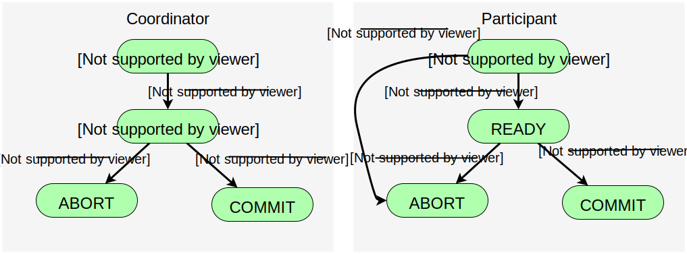

Fault tolerance is an important goal in distributed systems
ability of the system to recover from partial failures without serously
affecting the overall performance
when a failure occurs the system should continue to operate in
in an acceptable way while repairs are made
fault tolerance and reliable communication are strongly related
reliable client-server communication and group communication
atomicity is very important for distributed applications
distributed commit protocols - protocols that ensure
that a group of processes jointly commit their local work, or
collectively abort and return to a previous system state
redundancy is a key technique in achieving fault tolerance
Fault tolerance
an fault tolerance example is applying error correcting codes for
transmitting packets
there exist different types of failures
redundancy can be:
time redundancy
physical redundancy
key approach in tolerating processes is organizing serveral indentical
processes into a group
if some of the processes fail other processes take over
process groups can be organized differently
processes are equal and there is no leader
there is a process coordinator and other precesses are workers
both organization types have advantages and disadvantages
Distributed commit problem
an operation should be performed by each member of a process group, or none at all
opperation may be delivery of a message in the
case of multicasting
operation is also commit of a transaction on a single site that
takes part in the transaction
one-phase commit protocol is established by means of
a coordinator which tells other involved processes (participants)
whether or not to locally perform the operation
obvious drawback is that there is not way to tell
coordinator that some of the participants cannot
actually perform the operation
Is this good approach for distributed transactions?
Two phase commit protocol
assuming that no failures occur protocol consists of two
phases
first phase
- coordinator sends a VOTE-REQUEST message to all
participants
participants receive VOTE-REQUEST message and returns
VOTE-COMMIT or VOTE-ABORT message to the
coordinator
second phase
coordinator receives votes and desides:
if all participants voted
to commit then coordinator sends GLOBAL-COMMIT to
all participants
if, however, at least one voted to abort transaction
then coordinator decides to abort the trasanction and
multicasts a GLOBAL-ABORT message
participants which voted to commit transaction wait for
the final reaction from the coorinator and if they receive
GLOBAL-COMMIT they execute transation and if receive
GLOBAL-ABORT they abort it localy
Two phase commit protocol cont.
finite state machine of coordinator and participants

Two phase commit protocol - problems
participants and coordinator wait some time and this can be the reason
for problems if some of processes are stuck
to prevent this, time mechanisms are used
three points of potential wait
participant is waiting in INIT state for a VOTE_REQUEST from the coordinator
solution - after some time participatn can decide
to send VOTE_ABORT to the coordinator
coordinator blocked in state WAIT - waiting for the
votes of each participant
solution - after some time coordinator should send
GLOBAL_ABORT to all participants
participant is blocked in state READY waiting for the
global vote sent by the coordinator
solution - simplest solution is to block
each participant until coordinator recovers
Two phase commit protocol - blocking factors
better solutions for the case 3. from the last page
(when participant is waiting in READY state)
first solution would be that participant (say participant P)
contacts another participant Q and decide from it's state what
should do:
State of Q
Action of P
COMMIT
Make transition to COMMIT
ABORT
Make transition to ABORT
INIT
Make transition to ABORT
READY
Contact other participant
if all participants are in state READY no decesion can be
taken
in order to recover processes need to save its state
to a persistent storage - so that they can recover
to that state again
Two phase commit protocol - recovering after crash
in order to recover processes need to save its state
to a persistent storage - so that they can recover
to that state again
participant was in INIT - it can decide to abort after
recovery
participant was in COMMIT or ABORT - it can decide to
retransmit its decision to the coordinator
participant was in READY - it is forced contact other
participants and decide again according to the previous table
coordinator was in WAIT - it can retransmit the
VOTE_REQUEST after recovering
coordinator had come to a decision before crash - decision
has to be recorded and after recovery just retransmitted
Two phase commit protocol - problems
in some situations participants need to block until the
coordinator recovers
example when all participants received VOTE_REQUEST and
processed it, while in the meantime the coordinator crashed
participants then cannot cooperatively decide on the final
action and have to wait
because of this 2PC is also called blocking commit
protocol
solutions
using three fases instead of two
receiver multicasts a received message to all other
participants
final decision can be reached even when coordinator crashed
2PC is, for instance, used by database servers for transactions modifying
data on multiple servers
Agreement protocols
In distributed systems sites (processors) compete and
cooperate to achieve commont goals
often it's necessary that sites reach mutual agreement
for instance data managers have to reach an agreement
whether to commit or abort a transaction
in distributed commit a site has to know outcome of
local commits
reaching agreement is easy in systems free from failures
voting and making decision according to majority vote (minimum,
maximum, mean(etc.) number of votes)
in systems prone to failures we can have faulty processors
sending conflicting values and preventing other processors
to reach an agreement (previous methods don't work)
processors now send values to other processors many times
, refine values, and reach agreement in order to isolate
effects of faulty processors -
process called agreement protocol
Agreement problems
Three well known agreement problems in distributed systems
Bizantine agreement problem
single value (which is to be agreed on) is initialized
by an arbitrary processor and other nonfaulty
processors has to agree on that value
consensus problem
every processor has its own initial value and all
nonfaulty processors have to agree on a single common
value
interactive consistency problem
every processor has its own initial value and all
nonfaulty processors have to agree on a set of common
values
Bizantine agreement problem
Problem first defined and solved (under processor failures) by Lamport et al.
arbitrarily chosen processor (source processor) brodcast
to other processors its initial value
Byzantine agreement should garantee that all nonfaulty processor
agree on the same value
processors must exchange values through messages to reach a consensus
processors receive values and relay values to other processors
faulty processors may confuse other processors by sending conflicting values
Byzantine agreement problem should meet the following objectives:
Agreement - all nonfaulty processors agree on the same value
Validity - if the source processor is not faulty,
then the common agreed upon value should be initial value of the source
Bizantine agreement problem - Byzantine generals problem
problem resembles a situation in which a team of generals in an army
(say Byzantine army) is trying to reach an agreement on an attack plan
generals are located on distant places and can
communicate only through messengers
some generals are traitors and try to prevent loyal generals
from reaching an agreements
the simplest type of messages can be 1 - attack, 0 - retreat
Upper bound of faulty processors
if faulty processors dominate in number they can prevent
nonfaulty processors to reach an agreement
the number of faulty processors should not exceed
a certain limit if a consensus is to be reached
Pease et al. showed that in a faulty connected network, it
is impossible to reach a consensus if the number of faulty
processors m exceeds $(n-1)/3$ where n
is total number of processors
Bizantine agreement problem - Byzantine generals problem
problem resembles a situation in which a team of generals in an army
(say Byzantine army) is trying to reach an agreement on an attack plan
generals are located on distant places and can
communicate only through messengers
some generals are traitors and try to prevent loyal generals
from reaching an agreements
the simplest type of messages can be 1 - attack, 0 - retreat
solves Byzantine problem for 3m+1 or more processors
m - number of faulty processors
n - total number of processors
$n>=3\times m+1$
algorithm is recursively defined
Lamport-Shostak-Pease algorithm
- Algorithm OM(O)
source processor sends its value to every processor
each processor uses the value it received from
the source (if it receives no value, default value is 0 (retreat)
- Algorithm OM(m), m>O
source processor sends its value to every processor
for each i let $V_i$ be the value that processor i receives from
the source, (if it receives no value, then it uses a default value of 0).
Processor i acts as the new source and initiates Algorithm OM(m-1) where
it sends a the value $V_i$ to each of n-2 other processors
for each i and each j!=i let $V_j$ be the value that processor i receives from
processor j in Step 2 using Algorithm OM(m-1)(if it receives no
value, then it uses a default value of 0).
Processor i uses the value majority $(V_1, V_2, \dots V_{n-1})$